Lec2 Image Formation
Camera and Lens
对于三维空间的信息，我们如果只用一个平面来接收，则得到的是一片模糊。因为三维空间上的每个点都有无数条光线，到达平面上的每个位置，而不是一一映射。
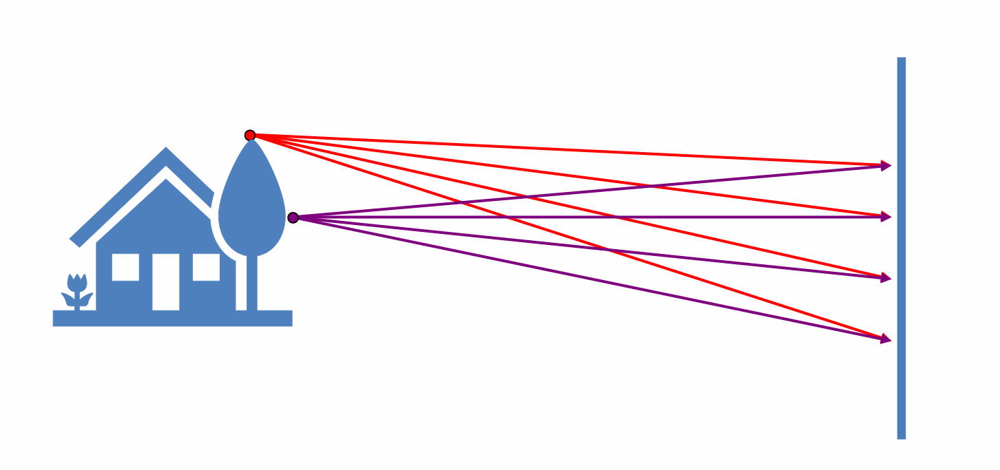
要想拍清楚，就需要让每个点只有一条光线到达平面上，因此在平面前加一个小孔，称为光圈（aperture），整个模型称为针孔相机（pinhole camera）。
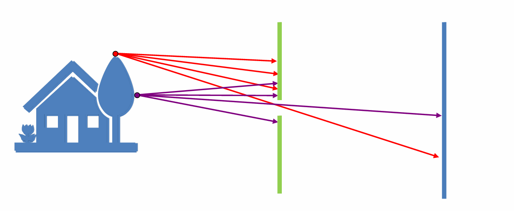
Note
孔不是越小越好：
- 通光量太小
- 衍射
凸透镜（lens）：
和小孔成像类似，但能获得更多光。其中有高斯成像公式
$$\frac{1}{i}+\frac{1}{o}=\frac{1}{f}$$
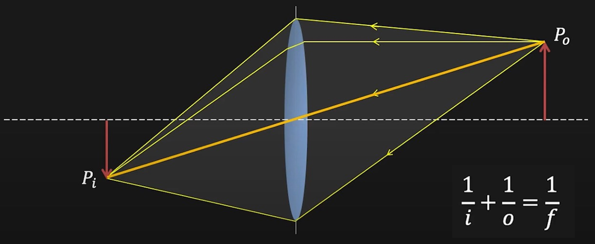
Note
当 $o\rightarrow\infty$ 时，$f=i$。由于现实中 $o$ 远大于 $i$，因此我们默认 $f=i$ 成立。
放大率（magnification）：
$$m=\frac{h_i}{h_o}=\frac{i}{o}=\frac{f}{o}$$
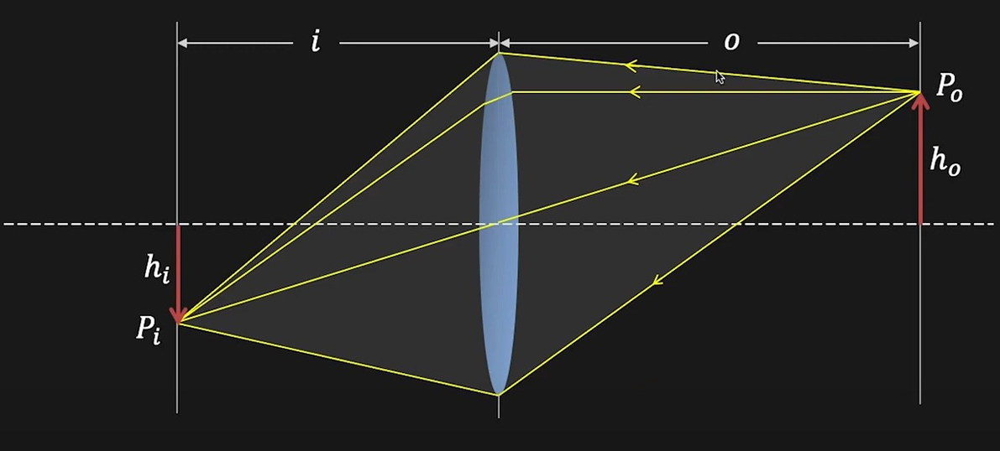
这就解释了为什么长焦镜头拍到的东西更大。因为焦距越大，放大率越大。
视野（field of view, FOV）：
视野就是观察范围，通常用一个角度来表示（angle of view）。
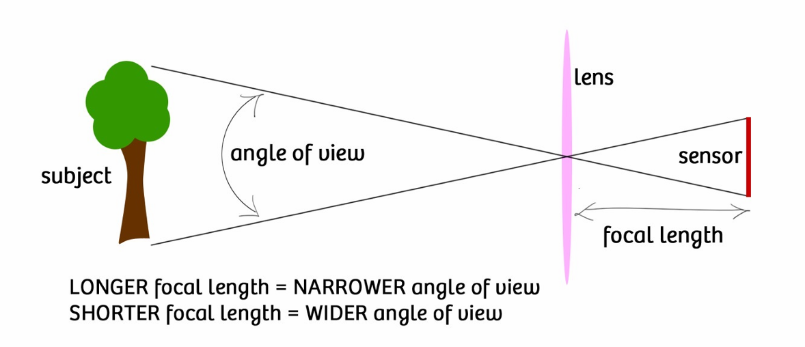
与视野有关的是焦距和传感器大小。焦距越小，传感器越大，视野就越广。
Note
传感器还对接收光强有影响。底片大说明接受光线能力强，同样光线下（尤其是弱光），拍出的图片更清晰。
Note
我们一般讲等效焦距，即原本焦距根据传感器大小进行归一化。
光圈（aperture）：
光圈控制了多少光经过凸透镜汇聚到像平面上。光圈越大，进光量越大。光圈的直径记为 $D$。
F-number:
$$N=\frac{f}{D}$$
使用 F-number 是因为光圈大小也要拿焦距参考。
失焦（lens defocus）：
像平面相对于镜头位置固定的时候，只有物距为 $o$ 的特定平面上的东西才能拍清楚，否则会形成模糊光斑（失焦）。设光斑直径为 $b$，则有
$$\frac{b}{D}=\frac{|i'-i|}{i'}$$
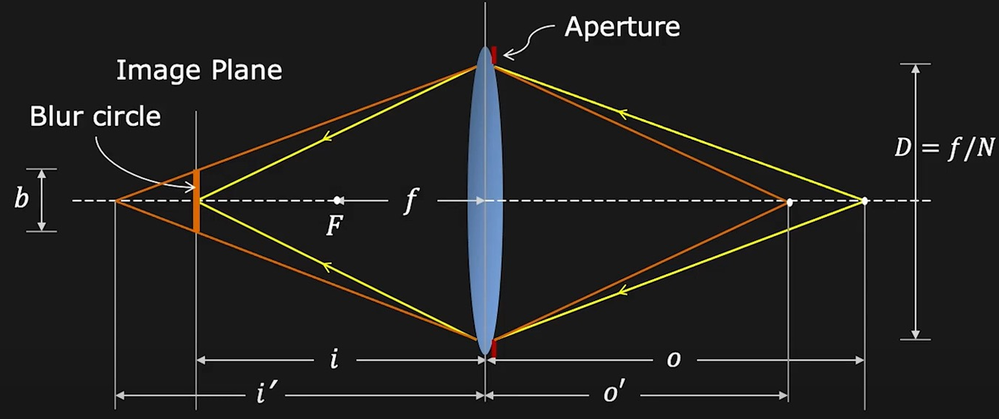
景深（depth of field, DOF）：
理论上每次只能拍清楚一个平面，但实际上在特定范围内的东西都能拍清楚，这个前后范围就叫景深。之所以存在特定范围，是因为图像本身由像素构成，所以有一个容忍度，只要光斑比像素小就行。
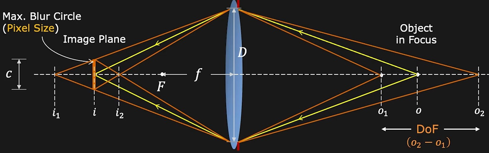
设 $C$ 为 pixel size，则有
$$C=\frac{f^2(o-o_1)}{No_1(o-f)}$$
$$C=\frac{f^2(o_2-o)}{No_2(o-f)}$$
可以得到景深：
$$o_2-o_1=\frac{2of^2cN(o-f)}{f^4-c^2N^2(o-f)^2}$$
Note
如何模糊背景：
- 更大的光圈
- 更长的焦距
- 更近的前景
- 更远的后景
Geometric Image Formation
如何将三维空间的点映射成二维空间的点？
透视投影（perspective projection）：
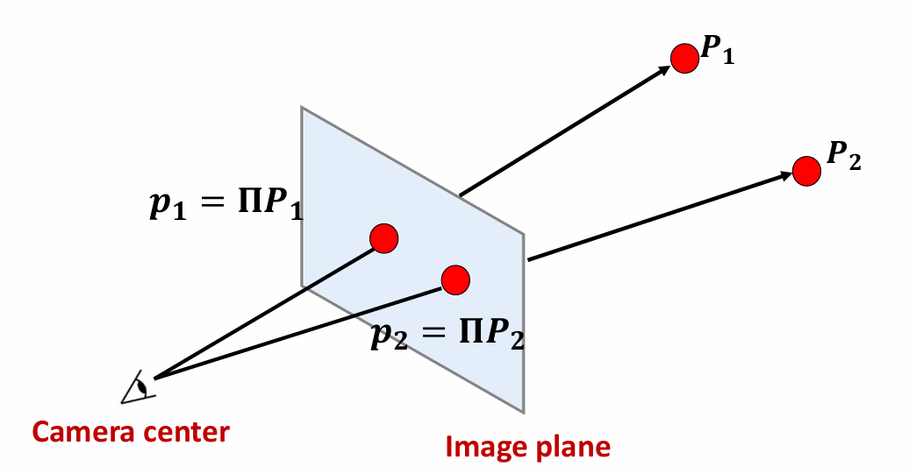
设相机中心位于原点，对于三维空间的一个点 $P=(x,y,z)$，投影到二维空间的一个点 $P'=(u,v)$。
已知焦距为 $f$，像距近似为 $f$，物距为 $z$，则有
$$u=\frac{fx}{z}$$
$$v=\frac{fy}{z}$$
我们无法直接用矩阵进行线性变换，因此需要转换成齐次坐标，然后有
$$\begin{bmatrix} f & 0 & 0 & 0 \\ 0 & f & 0 & 0 \\ 0 & 0 & 1 & 0 \end{bmatrix}\begin{bmatrix} x\\ y\\ z\\ 1 \end{bmatrix}=\begin{bmatrix} fx\\ fy\\ z \end{bmatrix}\cong\begin{bmatrix} \frac{fx}{z}\\ \frac{fy}{z}\\ 1 \end{bmatrix}$$
Vanishing Point:
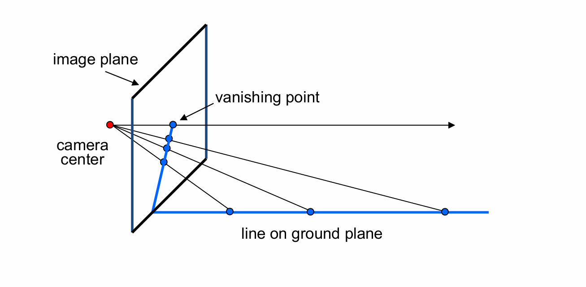
vanishing point 由透视投影引起。
- 如果三维空间中的线垂直于投影平面，则 vanishing point 位于平面中心
- 三维空间中一组平行线的 vanishing point 相同
- vanishing point 的位置可以告诉我们直线在三维空间中的朝向，相机与 vanishing point 之间的连线与直线平行
- vanishing point 可能在图像内，也可能在图像外，也可能在无穷远处（线与投影平面平行）。
Vanishing Line:
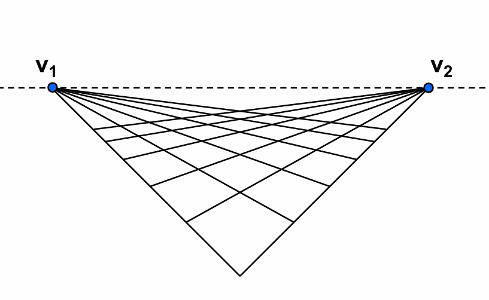
vanishing line 将 vanishing point 连接起来，表示三维空间的一个平面，这个平面是由多组不同的线构成的。
vanishing line 可以告诉我们图像中某个平面在三维空间中的朝向。
透视畸变（perspective distortion）：
原因：像平面和物体平面不平行。
解决方法：轴移相机（可以调整光轴位置的相机）
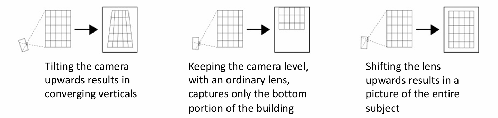
径向畸变（radial distortion）：
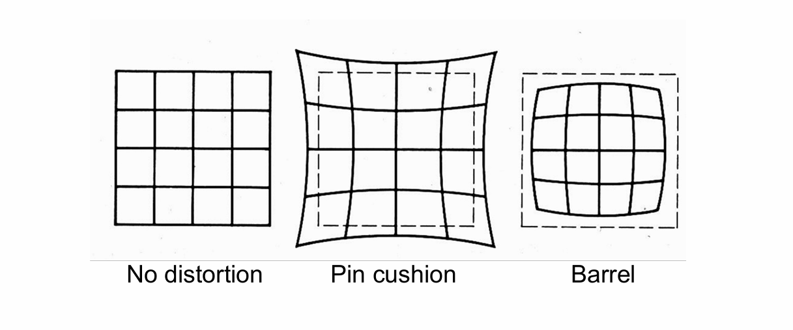
原因：镜头问题
直线变弯，不满足透视投影，产生枕形畸变或桶形畸变。广角一般会有桶形畸变，长焦一般会有枕形畸变。
畸变的程度和到图像中心的距离有关，距离越远畸变越严重。
$$r^2=x_n'^2+y_n'^2$$
$$x_d'=x_n'(1+\kappa_1r^2+\kappa_2r^4)$$
$$y_d'=y_n'(1+\kappa_1r^2+\kappa_2r^4)$$
其中，$x_n'$ 和 $y_n'$ 是没有径向畸变的投影后的坐标。
解决方法：使用标定板进行标定，求出畸变系数后再校正恢复。
正交投影（orthographic projection）：
正交投影是透视投影的一个特例，图像中心与相机中心距离无穷远。每个点作一条到像平面的垂线，相当于去掉 $z$ 坐标。
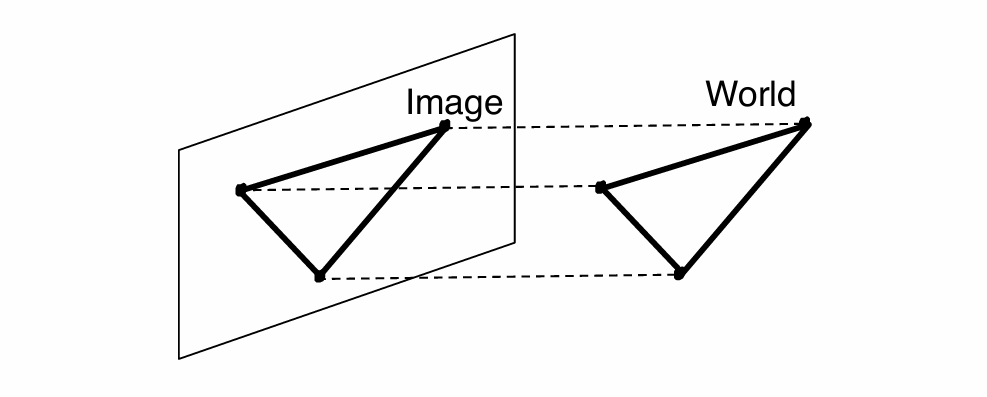
$$\begin{bmatrix}
1 & 0 & 0 & 0 \\
0 & 1 & 0 & 0 \\
0 & 0 & 0 & 1
\end{bmatrix}\begin{bmatrix}
x\\
y\\
z\\
1
\end{bmatrix}=\begin{bmatrix}
x\\
y\\
1
\end{bmatrix}$$
Photometric Image Formation
快门（shutter）：
快门用于控制曝光时间：
- 快门速度太快：曝光时间太短，图像暗，欠曝
- 快门速度太慢：曝光时间太长，图像亮，过曝+模糊（物体或相机会移动）
快门的应用：
- 拍摄闪电，快门速度慢，曝光时间长，这样才有几率拍到闪电；同时光圈要小，避免过曝
- 拍摄水流动的效果，同样使用慢快门速度
Rolling Shutter Effect:
例如拍摄风扇高速转动的视频，分析每一帧，风扇叶片并不能保持正常的形状。
产生原因：rolling shutter 和 global shutter 的区别。前者逐行扫描，后者同时曝光，而拍视频一般使用前者。拍摄同一幅图时，每个位置不是同时曝光的，如果物体在快速移动，就会出现问题。
RGB:
我们可以使用 RGB 值来表示颜色。任意一种颜色都可以由红绿蓝三种颜色以不同比例混合而成。
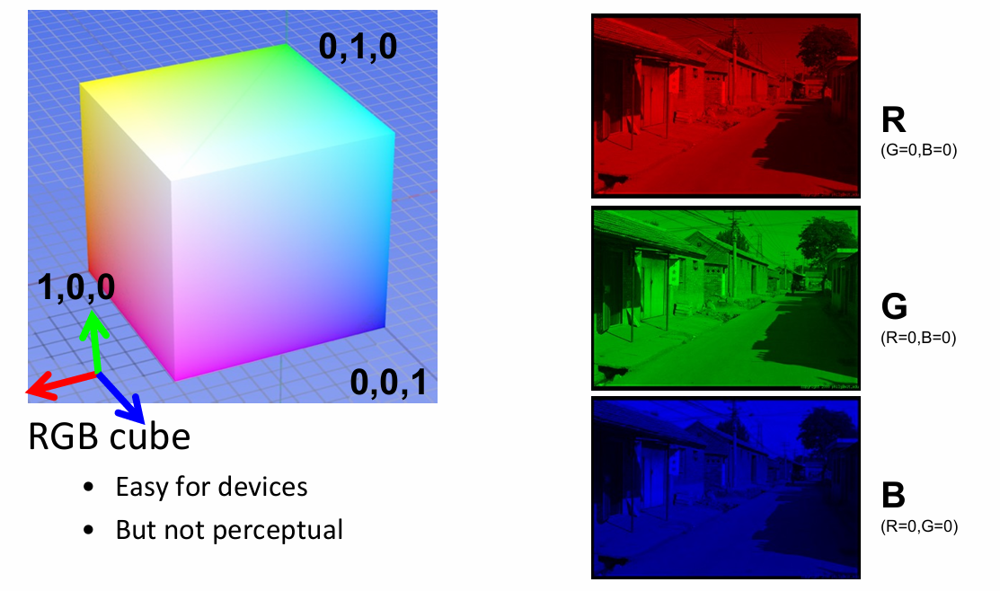
HSV:
- H (Hue): 色相
- S (Saturation): 饱和度
- V (Value): 亮度
HSV 和 RGB 之间有固定的转换公式。相比于 RGB，HSV 比较方便调色。
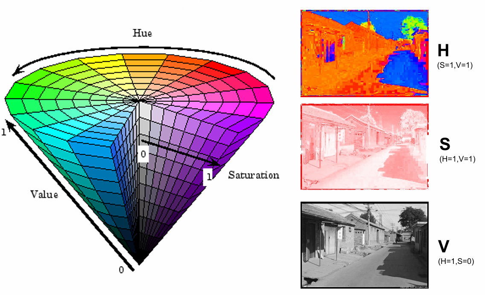
拜耳滤波器（Bayer filter）：
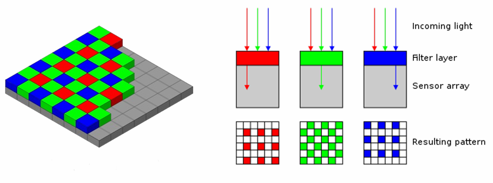
相机里一般使用拜耳滤波器，分别感知三种颜色。
每个像素实际上只能记录一种颜色的光，相当于四个像素才能表示一个完整像素。
绿色更多是因为人眼更敏感（处于感知范围中间）。
最后的图像尺寸要比图像传感器小，得到原本尺寸需要使用插值。